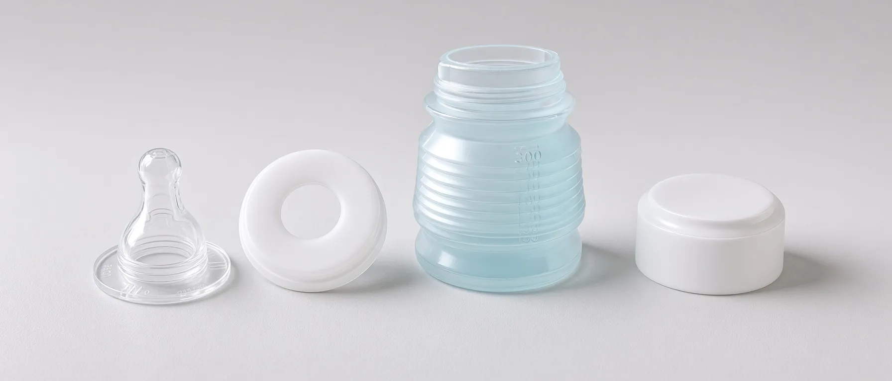

Biberon rigideBoîte doseuseMélangeurObturateur
Quatre objets pour un seul repas. À transporter, chercher, manipuler, laver et sécher.

Le biberon pratique
Un biberon rigide, une boîte doseuse, un mélangeur et un obturateur : quatre objets pour un repas. BIBEON réunit leurs fonctions.
Voir comment ↓Moins à porter.
Moins à démonter.
Moins à laver.
Moins de gestes quand bébé a faim.
01 · Le transport
Quatre objets pour un seul repas. À transporter, chercher, manipuler, laver et sécher.

Un seul objet. La dose de poudre voyage déjà dedans.

02 · La légèreté
Environ 35 grammes, tétine et capuchon compris. Peu de masse à tenir, un corps étroit et 9,5 cm une fois replié.
Léger ne veut pas dire moins conçu.
Le principe
03 · Sans boîte doseuse
Replié, BIBEON ne laisse presque plus d’air autour de la poudre, et son capuchon le ferme hermétiquement : elle reste fraîche et se dilue sans grumeaux. Le flacon ne filtre pas la lumière — rangez-le dans son pochon ou un placard.
04 · Sans mélangeur
À l’intérieur, les creux des soufflets brisent les amas de poudre quand vous secouez.
05 · Sans valve
Le lait descend. BIBEON aussi. Abaissez les soufflets jusqu’au niveau du lait, puis coudez légèrement le flacon.
06 · Sans obturateur
Le toit plat du capuchon comprime la tétine dans sa base et obture son orifice.
07 · L’hygiène dehors
Sur un banc, dans un train ou à la terrasse d’un café, les mains ne sont pas toujours impeccables. Le bloc bague–tétine–capuchon se manipule par le capuchon : les doigts ne touchent ni la tétine ni le lait.
« Je voulais un biberon qu’on puisse donner après avoir changé une roue, sans avoir pu se laver les mains. »Suzanne de Bégon · Inventrice
1Dévisser le bloc solidaire.
2Le poser à l’envers sur sa face plate.
3Ajouter l’eau, sans toucher la tétine.
Finalement